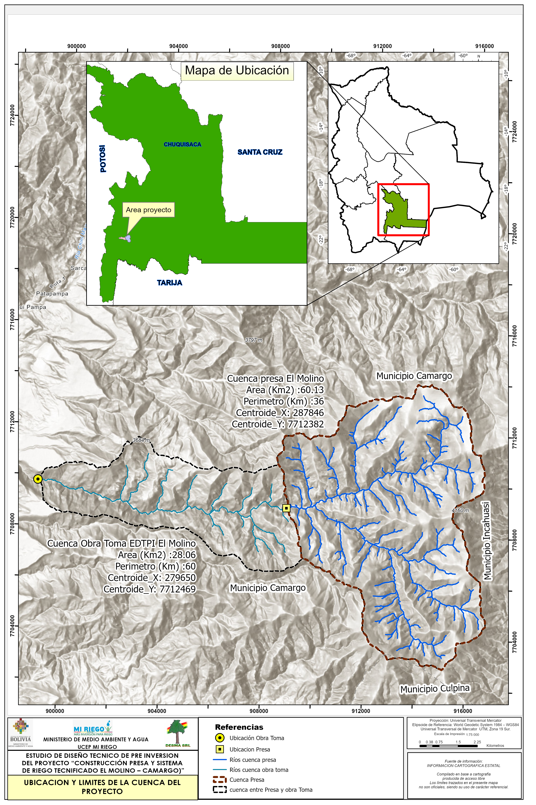

Hydrology Calculations
Reservoir Operations & Hydrological Analysis
Welcome
This site presents hydrological calculations and analyses for reservoir operations, water balance assessments, and flow dynamics. The analyses combine Python-based computational methods with interactive visualizations to support water resource management decisions.

Featured Analyses
Reservoir Operations
Comprehensive operational analysis including storage dynamics, inflow-outflow relationships, and water level forecasting using historical data and hydrological models.
Water Balance
Detailed water balance calculations accounting for precipitation, evapotranspiration, surface runoff, and groundwater interactions across the watershed.
Flow Analysis
Statistical analysis of flow regimes, flood frequency analysis, and low-flow characteristics for water availability assessment.
ESTUDIO DE DISEÑO TECNICO DE PRE INVERSION DEL PROYECTO “CONSTRUCCIÓN PRESA Y SISTEMA DE RIEGO TECNIFICADO EL MOLINO – CAMARGO)”
Modelación hidraúlica y sedimentología de la cuenca El Molino
Analista: Ing. MSc. Luis Alberto Avila Borja
Especialista en Recursos Hídricos, Postgrado en Ingeniería y Diseño de presas
Mapeamos el raster de alturas y vectores de pendientes
Mapeamos el raster de pendientes y vectores de pendientes
Modelación del flujo en un componente de onda cinemática KinwaveImplicitOverlandFlow para una intensidad de tormenta I y para una rugosidad n.
El componente DepthSlopeProductErosion requiere el campo magnitud de pendiente slp_mag con la denominación slope_magnitude.
RasterModelGrid((26, 21), xy_spacing=(np.float64(448.56339244924), np.float64(448.56339244924)), xy_of_lower_left=(np.float64(282909.25172346), np.float64(7706429.2976113)))Se inicia el componente DepthSlopeProductErosion.
Efectuamos una copia del raster de elevaciones para posterior comparacion e iniciamos los componentes de flujo y erosión
Visualizamos la erosión instantanea al final de la tormenta en m/s:
Asimismo graficamos la erosión acumulada comparando las elevaciones del terreno antes y despues del proceso.
erosión media: 0.54erosión cuenca debida al evento de precipitacion de intensidad I y duracion D (Ton): 5937.13Methodology Overview
The analyses employ:
- Hydrological modeling: Rainfall-runoff transformation using empirical methods
- Time series analysis: Trend detection and seasonal decomposition
- Uncertainty quantification: Monte Carlo simulations for reservoir operations
- Spatial analysis: GIS-based watershed delineation and land use assessment
Tools & Methods
This work utilizes:
- Python for data processing and analysis (pandas, numpy, scipy)
- Plotly for interactive visualizations
- Hydrological models for reservoir simulation and forecasting
- Statistical methods for frequency analysis and trend detection
About
These analyses support evidence-based decision-making in water resource management, combining field data with computational hydrology and hydrogeology principles.